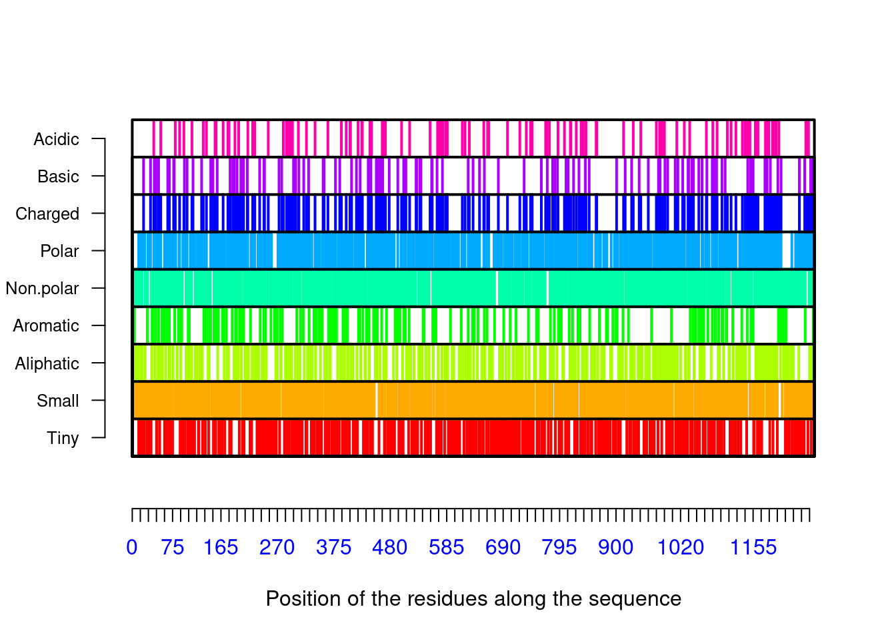
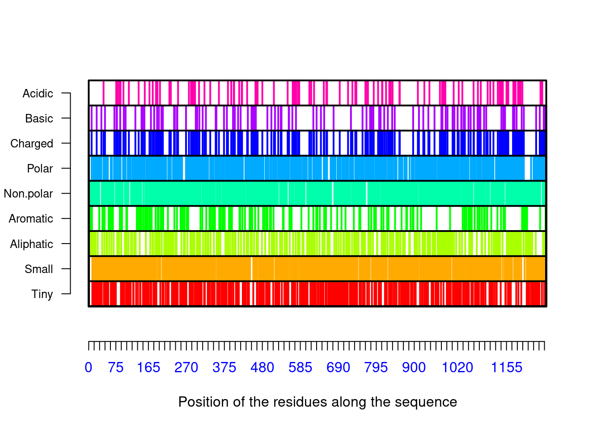

Chapter 24 Using seqinr
After installing the library by invoking install.packages("seqinr") to the console, load it to the workspace
##
## Attaching package: 'seqinr'## The following object is masked from 'package:Biostrings':
##
## translate## The following object is masked from 'package:dplyr':
##
## countReading the fasta file
## List of 6
## $ Spike_SARS_CoV2_2019 : 'SeqFastaAA' chr [1:1273] "M" "F" "V" "F" ...
## ..- attr(*, "name")= chr "Spike_SARS_CoV2_2019"
## ..- attr(*, "Annot")= chr ">Spike_SARS_CoV2_2019"
## $ Spike_SARS_CoV : 'SeqFastaAA' chr [1:1255] "M" "F" "I" "F" ...
## ..- attr(*, "name")= chr "Spike_SARS_CoV"
## ..- attr(*, "Annot")= chr ">Spike_SARS_CoV"
## $ Spike_Bat_coronavirus_RaTG13 : 'SeqFastaAA' chr [1:1269] "M" "F" "V" "F" ...
## ..- attr(*, "name")= chr "Spike_Bat_coronavirus_RaTG13"
## ..- attr(*, "Annot")= chr ">Spike_Bat_coronavirus_RaTG13"
## $ Spike_Pangolin_coronavirus_GX: 'SeqFastaAA' chr [1:1269] "M" "F" "V" "F" ...
## ..- attr(*, "name")= chr "Spike_Pangolin_coronavirus_GX"
## ..- attr(*, "Annot")= chr ">Spike_Pangolin_coronavirus_GX"
## $ Spike_Pangolin_coronavirus_GD: 'SeqFastaAA' chr [1:1265] "M" "L" "F" "F" ...
## ..- attr(*, "name")= chr "Spike_Pangolin_coronavirus_GD"
## ..- attr(*, "Annot")= chr ">Spike_Pangolin_coronavirus_GD"
## $ Spike_WIV1_Bat_Coronovirus : 'SeqFastaAA' chr [1:1256] "M" "K" "L" "L" ...
## ..- attr(*, "name")= chr "Spike_WIV1_Bat_Coronovirus"
## ..- attr(*, "Annot")= chr ">Spike_WIV1_Bat_Coronovirus"Count the number of sequences
## [1] "Number of sequences = 6"- Names of the sequences
## [1] "Spike_SARS_CoV2_2019" "Spike_SARS_CoV"
## [3] "Spike_Bat_coronavirus_RaTG13" "Spike_Pangolin_coronavirus_GX"
## [5] "Spike_Pangolin_coronavirus_GD" "Spike_WIV1_Bat_Coronovirus"- Annotation of sequences
## [[1]]
## [1] ">Spike_SARS_CoV2_2019"
##
## [[2]]
## [1] ">Spike_SARS_CoV"
##
## [[3]]
## [1] ">Spike_Bat_coronavirus_RaTG13"
##
## [[4]]
## [1] ">Spike_Pangolin_coronavirus_GX"
##
## [[5]]
## [1] ">Spike_Pangolin_coronavirus_GD"
##
## [[6]]
## [1] ">Spike_WIV1_Bat_Coronovirus"- Length of individual sequences
## [1] 1273 1255 1269 1269 1265 1256- Protein statistics
## $Compo
##
## * A C D E F G H I K L M N P Q R S T V W
## 0 79 40 62 48 77 82 17 76 61 108 14 88 58 62 42 99 97 97 12
## Y
## 54
##
## $Prop
## $Prop$Tiny
## [1] 0.3118617
##
## $Prop$Small
## [1] 0.5514533
##
## $Prop$Aliphatic
## [1] 0.2207384
##
## $Prop$Aromatic
## [1] 0.1256874
##
## $Prop$Non.polar
## [1] 0.5475255
##
## $Prop$Polar
## [1] 0.4524745
##
## $Prop$Charged
## [1] 0.1806756
##
## $Prop$Basic
## [1] 0.09426551
##
## $Prop$Acidic
## [1] 0.08641005
##
##
## $Pi
## [1] 6.236478It gives the type of proteins
## [1] "Spike_SARS_CoV2_2019"
## $Compo
##
## * A C D E F G H I K L M N P Q R S T V W
## 0 79 40 62 48 77 82 17 76 61 108 14 88 58 62 42 99 97 97 12
## Y
## 54
##
## $Prop
## $Prop$Tiny
## [1] 0.3118617
##
## $Prop$Small
## [1] 0.5514533
##
## $Prop$Aliphatic
## [1] 0.2207384
##
## $Prop$Aromatic
## [1] 0.1256874
##
## $Prop$Non.polar
## [1] 0.5475255
##
## $Prop$Polar
## [1] 0.4524745
##
## $Prop$Charged
## [1] 0.1806756
##
## $Prop$Basic
## [1] 0.09426551
##
## $Prop$Acidic
## [1] 0.08641005
##
##
## $Pi
## [1] 6.236478
##
## [1] "Spike_SARS_CoV"## $Compo
##
## * A C D E F G H I K L M N P Q R S T V W
## 0 84 39 74 42 83 78 15 77 60 99 20 81 57 55 39 96 100 91 11
## Y
## 54
##
## $Prop
## $Prop$Tiny
## [1] 0.3163347
##
## $Prop$Small
## [1] 0.5577689
##
## $Prop$Aliphatic
## [1] 0.212749
##
## $Prop$Aromatic
## [1] 0.1298805
##
## $Prop$Non.polar
## [1] 0.5521912
##
## $Prop$Polar
## [1] 0.4478088
##
## $Prop$Charged
## [1] 0.1832669
##
## $Prop$Basic
## [1] 0.09083665
##
## $Prop$Acidic
## [1] 0.09243028
##
##
## $Pi
## [1] 5.510607
##
## [1] "Spike_Bat_coronavirus_RaTG13"
## $Compo
##
## * A C D E F G H I K L M N P Q R S T V W
## 0 80 40 64 47 75 82 18 79 63 109 14 85 58 60 39 97 98 94 12
## Y
## 55
##
## $Prop
## $Prop$Tiny
## [1] 0.3128448
##
## $Prop$Small
## [1] 0.5500394
##
## $Prop$Aliphatic
## [1] 0.2222222
##
## $Prop$Aromatic
## [1] 0.1260835
##
## $Prop$Non.polar
## [1] 0.5500394
##
## $Prop$Polar
## [1] 0.4499606
##
## $Prop$Charged
## [1] 0.1820331
##
## $Prop$Basic
## [1] 0.09456265
##
## $Prop$Acidic
## [1] 0.08747045
##
##
## $Pi
## [1] 6.11311
##
## [1] "Spike_Pangolin_coronavirus_GX"## $Compo
##
## * A C D E F G H I K L M N P Q R S T V W
## 0 76 40 61 48 75 85 17 79 61 113 15 82 56 62 41 94 98 97 12
## Y
## 55
##
## $Prop
## $Prop$Tiny
## [1] 0.3096927
##
## $Prop$Small
## [1] 0.5429472
##
## $Prop$Aliphatic
## [1] 0.2277384
##
## $Prop$Aromatic
## [1] 0.1252955
##
## $Prop$Non.polar
## [1] 0.5539795
##
## $Prop$Polar
## [1] 0.4444444
##
## $Prop$Charged
## [1] 0.179669
##
## $Prop$Basic
## [1] 0.09377463
##
## $Prop$Acidic
## [1] 0.08589441
##
##
## $Pi
## [1] 6.235931
##
## [1] "Spike_Pangolin_coronavirus_GD"
## $Compo
##
## * A C D E F G H I K L M N P Q R S T V W
## 0 82 40 60 48 76 81 14 80 58 103 15 90 54 58 40 100 99 95 12
## Y
## 60
##
## $Prop
## $Prop$Tiny
## [1] 0.3177866
##
## $Prop$Small
## [1] 0.5541502
##
## $Prop$Aliphatic
## [1] 0.2197628
##
## $Prop$Aromatic
## [1] 0.1280632
##
## $Prop$Non.polar
## [1] 0.5517787
##
## $Prop$Polar
## [1] 0.4482213
##
## $Prop$Charged
## [1] 0.173913
##
## $Prop$Basic
## [1] 0.08853755
##
## $Prop$Acidic
## [1] 0.08537549
##
##
## $Pi
## [1] 5.900948
##
## [1] "Spike_WIV1_Bat_Coronovirus"## $Compo
##
## * A C D E F G H I K L M N P Q R S T V W
## 0 82 39 72 43 83 77 15 77 60 102 17 86 62 54 42 98 93 93 11
## Y
## 50
##
## $Prop
## $Prop$Tiny
## [1] 0.3097134
##
## $Prop$Small
## [1] 0.5589172
##
## $Prop$Aliphatic
## [1] 0.2165605
##
## $Prop$Aromatic
## [1] 0.1265924
##
## $Prop$Non.polar
## [1] 0.5517516
##
## $Prop$Polar
## [1] 0.4482484
##
## $Prop$Charged
## [1] 0.1847134
##
## $Prop$Basic
## [1] 0.09315287
##
## $Prop$Acidic
## [1] 0.09156051
##
##
## $Pi
## [1] 5.739146- Show commands in seqinr
## [1] "a" "aaa"
## [3] "AAstat" "acnucclose"
## [5] "acnucopen" "al2bp"
## [7] "alllistranks" "alr"
## [9] "amb" "as.alignment"
## [11] "as.matrix.alignment" "as.SeqAcnucWeb"
## [13] "as.SeqFastaAA" "as.SeqFastadna"
## [15] "as.SeqFrag" "autosocket"
## [17] "baselineabif" "bma"
## [19] "c2s" "cai"
## [21] "cfl" "choosebank"
## [23] "circle" "clfcd"
## [25] "clientid" "closebank"
## [27] "col2alpha" "comp"
## [29] "computePI" "con"
## [31] "consensus" "count"
## [33] "countfreelists" "countsubseqs"
## [35] "crelistfromclientdata" "css"
## [37] "dia.bactgensize" "dia.db.growth"
## [39] "dist.alignment" "dotchart.uco"
## [41] "dotPlot" "draw.oriloc"
## [43] "draw.rearranged.oriloc" "draw.recstat"
## [45] "exseq" "extract.breakpoints"
## [47] "extractseqs" "fastacc"
## [49] "gb2fasta" "gbk2g2"
## [51] "gbk2g2.euk" "GC"
## [53] "GC1" "GC2"
## [55] "GC3" "GCpos"
## [57] "get.db.growth" "getAnnot"
## [59] "getAnnot.default" "getAnnot.list"
## [61] "getAnnot.logical" "getAnnot.qaw"
## [63] "getAnnot.SeqAcnucWeb" "getAnnot.SeqFastaAA"
## [65] "getAnnot.SeqFastadna" "getAttributsocket"
## [67] "getFrag" "getFrag.character"
## [69] "getFrag.default" "getFrag.list"
## [71] "getFrag.logical" "getFrag.qaw"
## [73] "getFrag.SeqAcnucWeb" "getFrag.SeqFastaAA"
## [75] "getFrag.SeqFastadna" "getFrag.SeqFrag"
## [77] "getKeyword" "getKeyword.default"
## [79] "getKeyword.list" "getKeyword.logical"
## [81] "getKeyword.qaw" "getKeyword.SeqAcnucWeb"
## [83] "getLength" "getLength.character"
## [85] "getLength.default" "getLength.list"
## [87] "getLength.logical" "getLength.qaw"
## [89] "getLength.SeqAcnucWeb" "getLength.SeqFastaAA"
## [91] "getLength.SeqFastadna" "getLength.SeqFrag"
## [93] "getlistrank" "getliststate"
## [95] "getLocation" "getLocation.default"
## [97] "getLocation.list" "getLocation.logical"
## [99] "getLocation.qaw" "getLocation.SeqAcnucWeb"
## [101] "getName" "getName.default"
## [103] "getName.list" "getName.logical"
## [105] "getName.qaw" "getName.SeqAcnucWeb"
## [107] "getName.SeqFastaAA" "getName.SeqFastadna"
## [109] "getName.SeqFrag" "getNumber.socket"
## [111] "getSequence" "getSequence.character"
## [113] "getSequence.default" "getSequence.list"
## [115] "getSequence.logical" "getSequence.qaw"
## [117] "getSequence.SeqAcnucWeb" "getSequence.SeqFastaAA"
## [119] "getSequence.SeqFastadna" "getSequence.SeqFrag"
## [121] "getTrans" "getTrans.character"
## [123] "getTrans.default" "getTrans.list"
## [125] "getTrans.logical" "getTrans.qaw"
## [127] "getTrans.SeqAcnucWeb" "getTrans.SeqFastadna"
## [129] "getTrans.SeqFrag" "getType"
## [131] "gfrag" "ghelp"
## [133] "gln" "glr"
## [135] "gls" "is.SeqAcnucWeb"
## [137] "is.SeqFastaAA" "is.SeqFastadna"
## [139] "is.SeqFrag" "isenum"
## [141] "isn" "kaks"
## [143] "kdb" "knowndbs"
## [145] "lseqinr" "modifylist"
## [147] "move" "mv"
## [149] "n2s" "oriloc"
## [151] "parser.socket" "peakabif"
## [153] "permutation" "pga"
## [155] "plot.SeqAcnucWeb" "plotabif"
## [157] "plotladder" "plotPanels"
## [159] "pmw" "prepgetannots"
## [161] "prettyseq" "print.qaw"
## [163] "print.SeqAcnucWeb" "query"
## [165] "quitacnuc" "read.abif"
## [167] "read.alignment" "read.fasta"
## [169] "readBins" "readfirstrec"
## [171] "readPanels" "readsmj"
## [173] "rearranged.oriloc" "recstat"
## [175] "residuecount" "reverse.align"
## [177] "rho" "rot13"
## [179] "s2c" "s2n"
## [181] "savelist" "SEQINR.UTIL"
## [183] "setlistname" "splitseq"
## [185] "stresc" "stutterabif"
## [187] "summary.SeqFastaAA" "summary.SeqFastadna"
## [189] "swap" "syncodons"
## [191] "synsequence" "tablecode"
## [193] "test.co.recstat" "test.li.recstat"
## [195] "translate" "trimSpace"
## [197] "uco" "ucoweight"
## [199] "where.is.this.acc" "words"
## [201] "words.pos" "write.fasta"
## [203] "zscore"